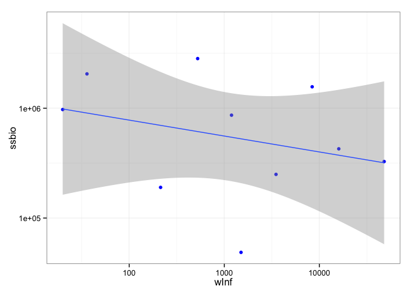
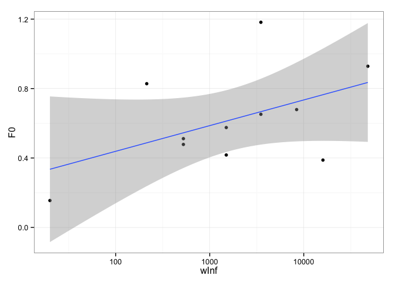

Posted on May 18, 2015
History matching size-based models - a real world example
Philipp Neubauer
18/05/2015
History matching the North Sea size-spectrum
This approach will rely on (presumably) known growth parameters, biomass and catch information over an aggregated period to perform history matching for the north sea model. Using Nis' code to pre-calculate these:
script_dir <- '~/Work/FFWD-Fish/NorthSea/nis_scripts/'
data_dir <- '~/Work/FFWD-Fish/NorthSea/'
# Use north east continental shelf (LME number = 7)
source(paste0(script_dir,'Biomass_from_RAMv3_PN.R'))
Bstate <- Biomass_from_RAMv3(LMEnumber = 22,data_dir,script_dir)## Loading required package: RPostgreSQL## Warning: package 'RPostgreSQL' was built under R version 3.1.3## Loading required package: DBI
## Loading required package: openxlsx## Warning: package 'openxlsx' was built under R version 3.1.3units <- Bstate[[2]]
state <- Bstate[[1]]
naFun <- function(fun) function(x) fun(x,na.rm=T)
naSum <- naFun(sum)
naMean <- naFun(mean)
new_state <- state %>%
group_by(cnames) %>%
mutate(ssbio = ifelse(!is.nan(Biomass),Biomass,SSB),
tcatch = ifelse(!is.nan(Catch),Catch,Landings)) %>%
summarise(ssbio = sum(ssbio),
tcatch = sum(tcatch),
F0 = naMean(F0),
M = naMean(M),
Fmsy = naMean(Fmsy),
t0 = naMean(t0),
wInf = naMean(wInf),
k = naMean(k))
rownames(new_state) <- new_state[['cnames']]
# From Blanchard et al 2014
new_state['Atlantic cod','k'] <- 0.216
new_state['Herring','k'] <- 0.606
new_state['Norway pout','k'] <- 0.849
new_state['European Plaice','k'] <- 0.12 # Plaice
new_state['Sand lance','k'] <- 1 # Sand eel
new_state['common European sole','k'] <- 0.284 # Sole
new_state['Sprat','k'] <- 0.681 # Sprat
new_state['Pollock','k'] <- 0.175 # Pollock (Saithe)
new_state['Haddock','k'] <- 0.271 # Haddock
new_state['Whiting','k'] <- 0.323 # Whiting
new_state['Sand lance','wInf'] <- 36
new_state['Whiting','wInf'] <- 1192
new_state$t0 <- 0
# Why no catch information on Sprat??? Add from assessment
new_state['Sprat','Fmsy'] <- 1.3
new_state['Sprat','tcatch'] <- 1752000
ggplot(data = new_state, aes(x = wInf, y = ssbio))+
geom_point(color='blue')+
scale_y_log10()+
scale_x_log10()+
theme_bw()+
geom_smooth(method = 'lm', se = T)

# Look at the system wide fishing mortality
ggplot(data = state, aes(x = wInf,y=F0))+
geom_point()+
scale_x_log10()+
geom_smooth(method = 'lm', se = T)+
theme_bw()## Warning: Removed 5 rows containing missing values (stat_smooth).## Warning: Removed 5 rows containing missing values (geom_point).

FOr the history matching, I need a function that